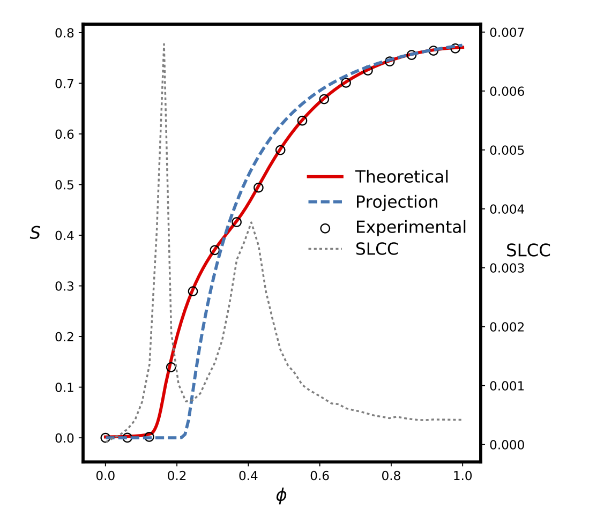

Two papers on clustered networks
We just put pre-prints of two new papers dealing with the analysis of clustered networks onto arXiv.
Its well-known that the topology of a network affects the way processes work over it: diseases spread more quickly when they occur in social networks that contain "hubs" with lots of social connections, for example. For a long time network science only considered the degree distribution of nodes - the number of contacts an individual has. But it turns out that the ways in which those contacts occur matter too.
In particular, human contact networks exhibit a feature called clustering. The easiest way to understand this is that the, if you have two friends, they are more likely to be friends themselves than are two randomly-chosen individuals: lots of people have mutual friends. This happens at longer distances as well, when you consider two of your friends also having another mutual friend -- but one who isn't a friend of yours.
Since infections often propagate through contacts, these structures change the way diseases move through a population. Specifically, they increase the probability of someone becoming infected, meaning that epidemics spread faster and become larger than you'd expect in systems that don't have clustering.

These two papers -- mainly written by Peter Mann, and co-authored by Anne Smith, John Mitchell, and myself -- look at the underlying mathematics of these clustered networks. We study both "weak" and "strong" clusters consisting of cycles of arbitrary length that may also have short-cuts across them. We derive a model that lets us predict the behaviour of percolation-type processes on these networks. There are some interesting phenomena on show, not least a suggestion us using the size of the second-largest component as a marker for phase changes in the largest (giant) component. We also look at how these results affect multiplex networks, of the kind one finds when two recognisably-distinct groups of people meet and mingle.
Both papers are under review by Physical Review E.
Peter Mann, V. Anne Smith, John Mitchell, and Simon Dobson. Percolation in random graphs with higher-order clustering. Submitted to Physical Review E. Preprint available on arXiv. URL: https://arxiv.org/abs/2006.06744.
Peter Mann, V. Anne Smith, John Mitchell, and Simon Dobson. Random graphs with arbitrary clustering and their applications. Submitted to Physical Review E. Preprint available on arXiv. URL: http://arxiv.org/abs/2006.08427.